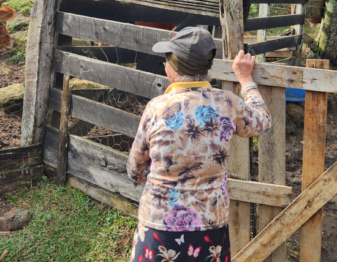
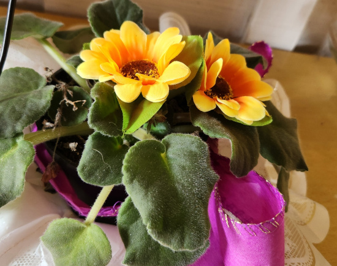

Educação
A educação apresenta um papel de extrema importância na integração entre as áreas rurais e urbanas, promovendo a troca de conhecimento e experiências que acabam por enriquecer ambas as regiões.
A urbanização
A urbanização juntamente com a globalização são crescente, por essas questões é fundamental trazer à tona as práticas, tradições e costumes das zonas rurais para as comunidades urbanas. Esse processo ajuda a preservar a riqueza cultural dessas áreas, mas também apresenta uma maior compreensão e conexão entre essas regiões que por muitas vezes apresentam estarem tão distantes.
Valorização das práticas e tradições rurais
As tradições e práticas rurais muitas vezes descendem de séculos atrás, marcando a história de um povo rico em experiências e conhecimento que podem contribuir para zonas urbanas. Práticas que vão desde receitas culinárias tradicionais até técnicas agrícolas sustentáveis, práticas essas que trazem a perspectiva da vida nos campos e um vislumbre de anos de história.
Incorporar essas tradições na vida urbana moderna tem muito a complementar, ajudando a preservar e valorizar a cultura rural, ao mesmo tempo, que proporciona a importância da relação do homem com a terra. Trazendo a perspectiva urbana aos ciclos naturais, no qual não se vê em grandes centros urbanos.
Promover a adaptabilidade e a integração da cultura rural
A educação com relação à cultura rural não só preserva a cultura, mas também traz maior adaptabilidade e integração entre diferentes modos de vida. Por esses aspectos, levar esses temas até o currículo educacional tem muito a beneficiar as comunidades urbanas, trazendo o conhecimento das formas tradicionais de cultivos sustentáveis juntamente com a inclusão de novas tecnologias que agregam a um futuro mais verde.
Dando maior perspectivas aos alunos, é possível cultivar uma maior apreciação pela agricultura local e dos produtores regionais. A promoção do respeito e o entendimento das diferenças e semelhanças culturais, abrirá novas portas para a integração da vida rural em centros urbanos.
Benefícios
A participação dos saberes rurais em sociedades urbanas não beneficia apenas uma parte, compartilhar saberes é uma via de mão dupla, pois a região rural pode se beneficiar com o acesso de novas tecnologias, melhorando a eficiência de produção, oportunidades no mercado e com inovações culturais.
Com a troca de conhecimento e de programas que estimulam a troca de conhecimento entre a região urbana e rural, as regiões podem desenvolver soluções inovadoras e sustentáveis que beneficiam ambas as partes. Fortalecendo a conexão das comunidades e trilhando um caminho para um futuro mais harmonioso e verde.